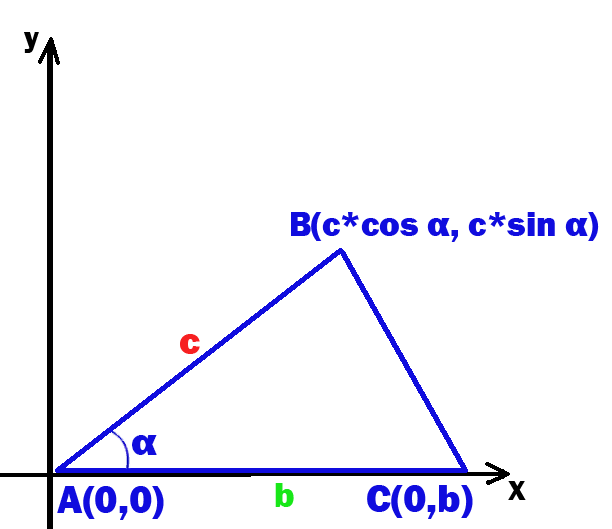

Бездна Геометрии
Теоремы
Для плоского треугольника, у которого стороны a, b, c и угол α, который противолежит стороне a,справедливо соотношение:
a2 = b2 + c2 – 2bc cosα.
Обозначим ∠С за α;
Поместим △ABC в систему координат так, что вершина А попала в начало координат, и сторона AC наложилась на луч Ox .
Тогда A(0, 0), C(0, b).
Выразим координаты точки В через длину отрезка AB и тригонометрические функции угла α:
B(с * cos α, c * sin α), т.к. :
Д.п. ВН - высота. В △ABH AB – гипотенуза => AH = c * cos α, BH = c * sin α,
но AH и ВН – расстояния от осей координат =>
длина отрезка АН – абсцисса точки В, а длина отрезка ВН – ордината точки В;
Выразим длину отрезка BC через координаты его вершин:
ВС = √(𝑐∗cos𝛼−𝑏)2+𝑐2∗ 𝑠𝑖𝑛2𝛼 = √𝑐2 ∗𝑐𝑜𝑠2𝛼−2∗𝑏∗𝑐∗cos𝛼+𝑏2+𝑐2∗𝑠𝑖𝑛2 𝛼 =√𝑐2∗(𝑠𝑖𝑛2 𝛼+𝑐𝑜𝑠2 𝛼)+𝑏2−2∗𝑏∗𝑐∗cos𝛼;
Но из основного тригонометрического тождества следует, что sin2 α + cos2 α = 1 =>
BC = √𝑐2+𝑏2−2∗𝑏∗𝑐∗cos𝛼 =>
BC2 = c2 + b2 – 2 * b * c * cos α;
Теорема доказана.
